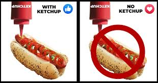

ketchup aka katsup
home

description:::
Tangy sauce perfect for dipping fries, chicken nuggets, and more!
sauce ingredients::
- 1 Large can Tomato Sauce
- 1 can of Tomato Paste
- 1 cup Sugar
- 2 cups White Vinegar
- 1 tbsp Mustard Powder
- 1 tbsp Garlic Powder
- 1 tbsp Onion Powder
- 1/2 tsp Chili Flakes
- 1/4 tsp Ground Cloves
steps:::
- Step 1: Combine ingredients in pot.
- Step 2: Mix thoroughly.
- Step 3: Heat on medium until simmering, then lower heat to
low and cook 20 minutes, stirring occasionally.
- Step 4: Take off heat and cool. Serve with yummy food!